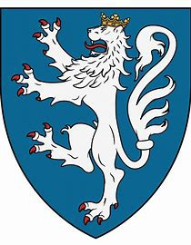

Antavla
255501547 Marianne Albertsdatter von Eberstein
Blev högst 85 år.

Far:
Albrecht VI von Everstein (1230 - 1289)
Mor:
Marianne Esbernsdatter Galen (1240? - 1284)
Född:
1275 Everstein, Holzminden, Tyskland.
[1]
Död:
1360 Asdal, Hjörring, Danmark.
[2]
Barn med
255501546 Anders Aagesen Stenbrikke (1295 - >1360)
Barn:
Johanne Andersdotter (Stenbrikke) (<1360 - <1419)
Personhistoria
Årtal
Ålder
Händelse
1275
Födelse 1275 Everstein, Holzminden, Tyskland
[1]
1284
Modern
511003095 Grevinnan Marianne Esbernsdatter Galen
dör 1284
[1]
1289
Fadern
511003094 Greve Albrecht VI von Everstein
dör 1289 Lubeck, Tyskland
1295
Partnern
255501546 Anders Aagesen Stenbrikke
föds 1295 Kokkedal, Hjörring, Danmark
[2]
1328
Brodern
Ludvig Albrechtsen von Everstein
dör 1328 Viborg, Danmark
[3]
1355?
Barnbarnet
63875386 Anders Nielsen (Panter)
föds omkring 1355 Kaersgaard, Hjörring, Danmark
1360
Död 1360 Asdal, Hjörring, Danmark
[2]
>1360
Partnern
255501546 Anders Aagesen Stenbrikke
dör efter 1360
Källor
[1]
Myheritage
[2]
neven.dk
[3]
wikitree